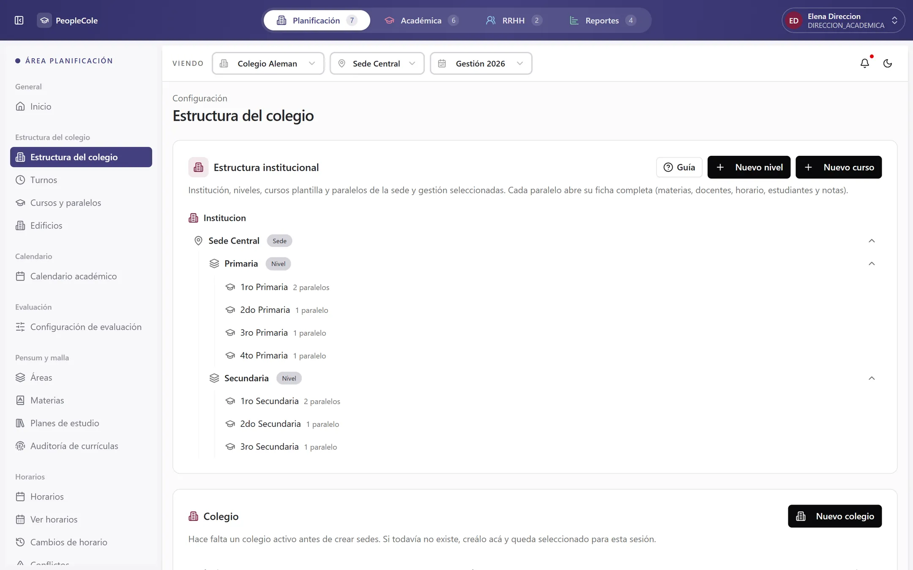
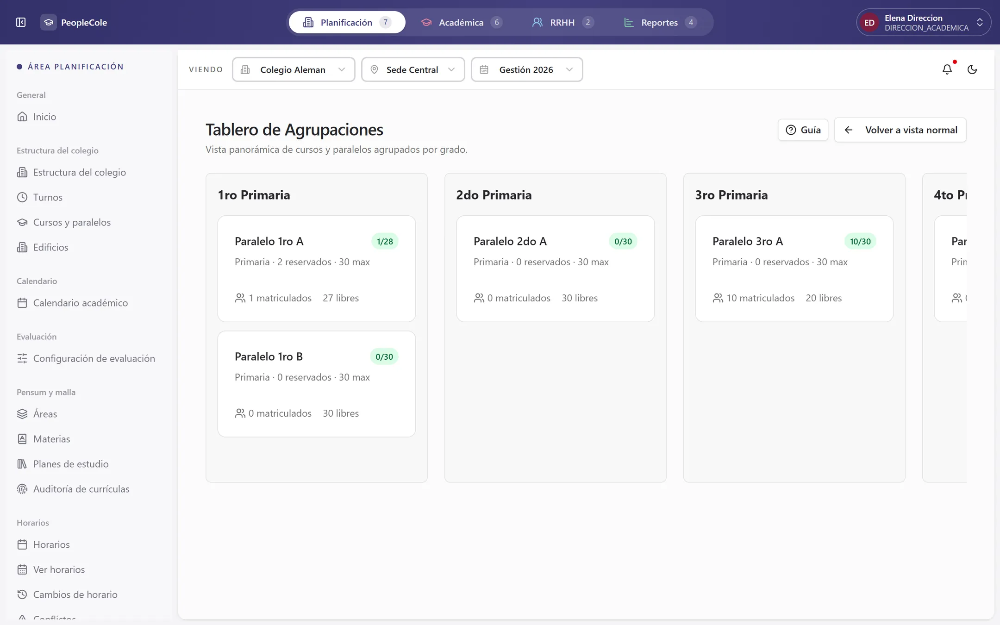
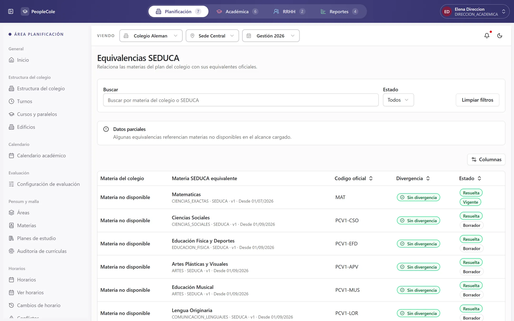
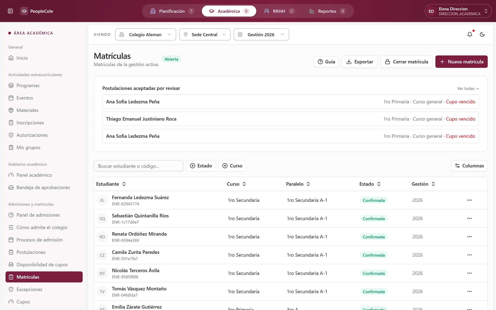

Académico 7
- Admisiones y matrícula
- Pensum y malla curricular
- Horarios y asignación docente
- Asistencia
- Notas, boletines y promoción
- Planificación docente
- Calendario institucional
La web para el colegio y la app para cada familia, docente y alumno. Todos con la misma información, al instante.


El colegio abre sus admisiones en una página con su propia imagen. La familia postula desde el celular, sin filas ni papeles.


Los datos del hijo y de la familia, un último vistazo y listo. Con su código, la familia sigue la postulación cuando quiera.


La familia recibe su confirmación al instante. Dirección académica ve cada postulación con su estado, sus documentos y por dónde entró.


La puesta en marcha deja todo en su lugar antes de la primera clase: cursos, grupos, materias, SEDUCA, docentes y familias.

1EstructuraSedes, niveles, cursos y paralelos

2Grupos y subgruposPor idioma, laboratorio, taller o nivelación

3Creación de materiasEl pensum de cada curso, con sus versiones

4SEDUCACada materia con su equivalencia oficial

5DocentesCarga, disponibilidad y horario

6Estudiantes y familiasMatrícula, vínculos y acceso a la app
Cada paralelo con su cupo y los lugares que quedan. Dentro de cada curso, subgrupos para lo que se enseña aparte.

El colegio enseña con su propia malla. El sistema sabe a qué materia oficial corresponde cada una, con su código, y avisa si algo no coincide.

Cuántas horas tiene cada uno, quién está pasado y quién tiene margen. Lo que hay que resolver aparece antes de publicar el horario.
Al confirmar la matrícula, el colegio da acceso a la familia con un clic. Cada persona recibe su usuario por correo y entra a la app con su hijo ya vinculado.


La familia ve lo que debe, elige pagar con QR y escanea con la app de su banco. Sin filas en caja ni comprobantes por WhatsApp.


Cada pago entra a la caja del día con su medio y quién lo cobró. Al final del día se cuenta y se cierra.

Asistencia, notas, tareas y avisos de cada hijo, en la app. Sin esperar a la reunión de padres ni al boletín.


Cada aviso dice qué pasó y qué se espera. La familia justifica una falta, elige el horario de una reunión o ve su descuento, desde el mismo aviso.


Clubes, talleres, salidas y ferias. La familia inscribe a su hijo desde el celular y sigue todo lo que pasa adentro.


Gratis o con cuota mensual. Las familias se anotan solas o por invitación, y con el cupo lleno pasan a lista de espera.

Se arman en minutos y, al publicarlos, las familias reciben el aviso. Cada inscripción se aprueba desde una bandeja.


Su día, sus listas y sus notas en el celular. Cuando cierra la lista, la familia del que faltó recibe el aviso.


El cuaderno le muestra cuánto lleva y qué le falta antes del cierre. Y la nota que carga, el alumno la ve al instante.


Cada salida del aula queda registrada: de qué clase venía, quién lo atendió y cómo terminó.

Alergias, medicación y qué hacer en una emergencia, a un clic. La familia la actualiza desde la app y Enfermería la confirma. Los datos nacen tapados y cada lectura queda registrada.


Recibe el aviso, ve a qué hora salió del aula y cuándo volvió, y lo que Enfermería recomienda para la casa.


Lo que cada docente nota en clase llega a un solo lugar, ordenado por urgencia. Nada se pierde entre cuadernos y mensajes.

Reportado, en investigación, resuelto. Se ve quién lo lleva, qué tan grave es y qué quedó sin asignar.

Cuando hace falta un acompañamiento, el colegio lo propone por la app y la familia decide. Cada sesión le llega como aviso.


Lo que puede impedir el cierre del trimestre, con nombre y apellido. A tiempo para actuar.

Escala, nota para aprobar y el peso de cada dimensión. Todos los docentes califican con la misma regla.

El avance de notas por curso, materia y docente. Verde: al día. Ámbar: falta.

Licencias, justificaciones y postulaciones esperan su decisión en una bandeja, con la norma a la vista.


Desde la postulación hasta la última nota: todo en orden, y cada paso con el módulo del que salió.

Cada uno contesta algo concreto, con el dato real del sistema.

¿Qué cursos faltan más?

¿Quién no entrega las tareas?

¿Quién está por perder el año?

Notas por alumno y materia

Horarios docentes, sin choques

Aulas ocupadas
Se inscriben, pagan con QR y acompañan a sus hijos.

Su horario, sus tareas y sus notas.
Pasan lista y califican desde el aula.
Visitas y ficha médica, siempre a mano.
Casos y acompañamiento, a tiempo.
Ve todo, decide y actúa a tiempo.
Agendemos una demostración con los datos de su colegio.